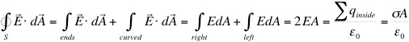

Consider a single point charge +Q and a spherical surface, S, of radius r and center at the location of +Q. From the symmetry of this situation we can conclude that, everywhere on the surface S, E has the same value and is directed radially outwards (normal to the surface). This is the same as the direction of dA. Therefore,
so that,
which is exactly Coulomb's Law !!
As has already been stated - Gauss's Law and Coulomb's Law are different statements of the same physical principle.
Charge is distributed uniformly throughout the volume of the sphere (this means that the sphere must be a non-conductor since as we have seen the charge on a conductor must reside on the surface) such that the total charge Q is given by,
where ρ is the (volume) charge density, in units of Coulombs/m3.
What is the electric field at any point either outside or inside the sphere ?
Due to the symmetry of this configuration we can conclude that E is directed radially outwards everywhere and can (at most) depend only on the (radial) distance from the center of the sphere. There are two distinct regions to consider:
Outside the sphere, r > R
Applying Gauss's Law over a Gaussian surface (sphere) of radius r, then,
Inside the sphere, r < R
so that,
In other words, for points outside the sphere, the sphere behaves as a point charge located the sphere's center.
We saw exactly the same type of behavior when considering the gravitational effect of a spherical mass.
Applying Gauss's Law over a Gaussian surface (sphere) of radius r, then,
Or in terms of Q and R,
Note that for r < R only the charge inside a sphere of radius r contributes to E. The charge between r and R has no effect.
It is important to realize that without using Gauss's Law, these results could be obtained via Coulomb's Law, but would involve considerably more work - setting up a non-trivial multiple integral to consider every point charge in the sphere....
CYLINDRICAL SYMMETRY
Determine the E field a distance r from the line charge. (Note that the units of λ are Coulombs/meter)
Symmetry tells us that E can only have a component perpendicular to the line charge, that is perpendicular to the cylindrical surface shown.
Applying Gauss's Law over the cylindrical Gaussian surface, radius r and length l, as shown, there will in principle be three contributions - one from the curved surface and one from each of the two ends. However, on the ends E and dA are perpendicular, so that E·dA = 0, therefore there is no contribution to the flux through S. On the curved surface E and dA are parallel, thus,
so that,
We can extend this analysis to the case of a uniformly charged infinite cylinder in a similar manner to the extension of the point charge to the spherical charge distribution above.
RECTANGULAR SYMMETRY
Determine the E field at any distance above or below an infinite plane with charge density σ (Coulombs/m2).
Symmetry dictates the E must be perpendicular to the surface everywhere.
Applying Gauss's Law over the cylindrical surface shown, then the curved surface of the cylinder contributes nothing to the flux since E and dA are perpendicular. But on the ends E and dA are parallel. Therefore,

so that,
That is the electric field is constant - it does not depend on how far the field point is from the plane !!
Dr. C. L. Davis
Physics Department
University of Louisville
email: c.l.davis@louisville.edu